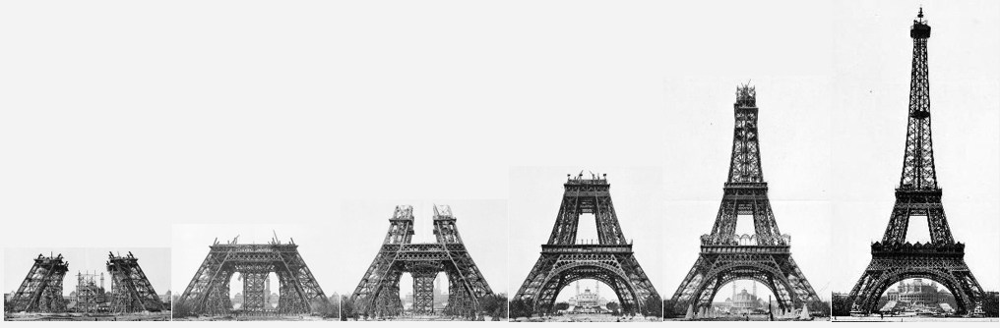

Since the Eiffel Tower was destroyed by Thanos during the Infinty War, I felt it only right to offer a few alternate solutions on how this mishap would be resolved in the comic books and MCU Films
A quick note about my process on working out this information.
There is so much information about the Eiffel Tower available on the Internet, but parsing through it to find something useful required some extreme Google Foo! I learned so many facts of the Eiffel Tower that if its ever a category on Jeopardy I will wager everything on the Daily Double. One fact i did find pertinent to this question, is that the Eiffel Tower is created from 18,000 iron pieces and 2.5 million rivets. In the end, to obtain the necessary measurements to provide an estimation of materials, I found a 1,698th scale 3D Model of the Eiffel Tower and took my measurements there.
I calculated the length of materials need to recreate the Eiffel Tower to be 24,807,377mm. To calculate the number of Geomags™ required to achieve this length I had to determine the best way to build a section to be strong and maintain consistency. I used the Eiffel Tower itself as an inspiration for this and decided the best way to build a solid stable piece would be in the box pattern of tower itself.
0-0-0
| \ | / |
0-0-0
| / | \ |
0-0-0
Representation of the patterning of Geomags™ rods and Ball Bearings.
This pattern would be replicated to build a cube of 4 equals sides and a base of the same pattern. Within the interior of the cube there would be two X shape sections connecting the top middle bearing of one side, to a bearing in the center of the cube, and then connectiong the middle bottom bearing of the opposite side. To make this cube stackable we will have to remove the 8 Geomags™ rods from the top perimeter as they will be added each time we stack a cube. This pattern works out to require 33 ball bearing and 70 Geomags™ rods per cube. Each Geomags™ stick is 27mm and the ball bearing is 12.70mm however the ball bearing is inset on the stick by a "dimple depth" of .43mm. So each length of cube is 90.84mm in length. Using that as base and knowing the total length of materials, I calculated 273,088 sections of 90.84mm. This gives me a total of 9,011,927 ball bearings and 19,116,209 Geomags™ rods. That gives a pretty good guess at the number of require materials. However, I realize that many of those sections will requires a top added to the base cube structure so I am working and additional 220,000 Geomags™ rods and 27,400 ball bearings which is approximately 8 Geomags™ rods and 1 ball bearing to top 10% of the total sections. I will add an additional 1,000,000 Geomags™ rods and 500,000 ball bearings to my estimate as well. Since it will be me creating this tower I will surely have forgotton to measure something before I go to the store to buy parts!
The basic building plan will be very similar to how the original Eiffel Tower was constructed. I would begin with the creation of the four base pillars of the tower and create a scaffolding in the center to hold the weight of the construction as the first platform is created. After the first platform is assembled and able to sit balanced upon the four pillars I would begin the construction of the mid section, followed by the second platform. Finally the top section of the tower would be built until reaching the radio antennae at the top.
As I described the basic bulding block of the 90.84mm cube, each "cube" of the pillars will be assembled in a similar matter. Much like an atom, the small cube will be the basic unit and used to create larger versions of itself. Due to the narrowing of the pillars from the base to the top each larger cube is a slightly different shape and will have to crafted invidiually with each calculated to fit exactly to the next. I would create these larger cubes in groups of four since each row will be 4 identical squares and then stack each completed square on to the next section. To provide stability to the frame the outer edges will be double the width of the starred sections in outer walls and interior of the larger "cubes". So if the interior X pattern is a 2 cubes by 2 cubes width the outer edges will be 4 cubes by 4 cubes since it will have to bear a larger mass load. This pattern will continue for each large "cube" section all the way up th tower.
The first platform will be created on top of the bottom base of three stacked cubes in four pillars and a scaffolding section to hold the weight of the platform. Once the first platform is created the scaffolding will be removed and those parts used to create the arches that are present on the under sides of the first platform.
The mid section will then be created in an identical manner to the bottom section. Each larger "cube" will be created in 4 identical units on the ground and then stacked one by one for three levels.
The second platform will be created and will not require the use of a scaffolding as the pillars should now be able to hold the weight of the section
The top section of the tower is some what trickier as it requires addtional sections outside of the larger "cubes" and we are much higher in the air. This additional section connects the four separate pillars in the middle and provides stability to the tower. We will now be building each cube section in place and between each "cube" layer we will connect the cubes with a series of similarly patterned cross sections to bridge the ever narrowing gap between the pillars until we reach the peak of the tower.
The radio tower will be completed last and built in place as well. This will be created by making increasingly larger contentric rings and stacking them and repeating the same pattern in decreasing fashion to form the ball at the top. Followed by the radio tower to complete the build.
I will now cross my fingers and hope that this does not quickly become the Leaning Tower of Paris!